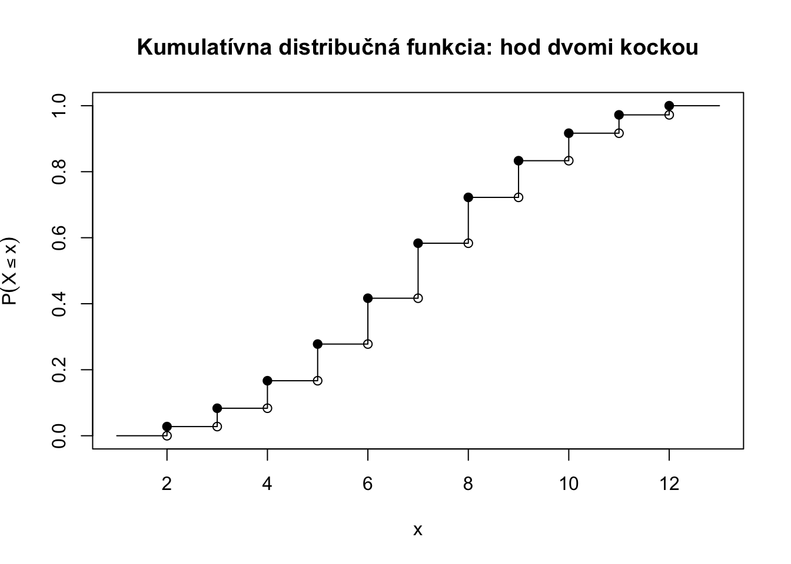
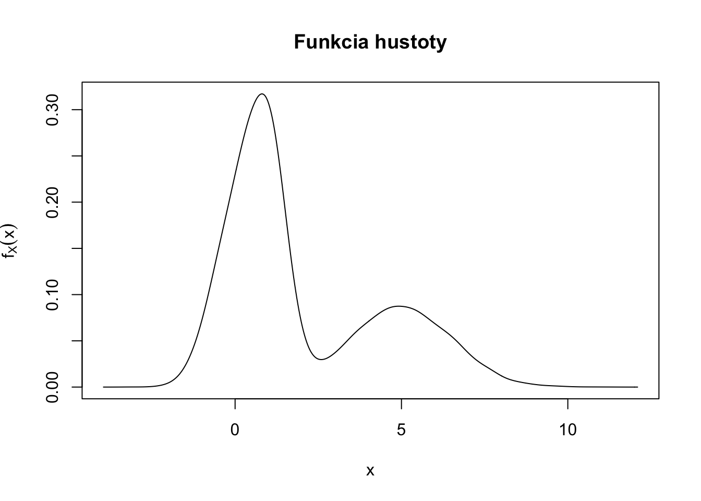
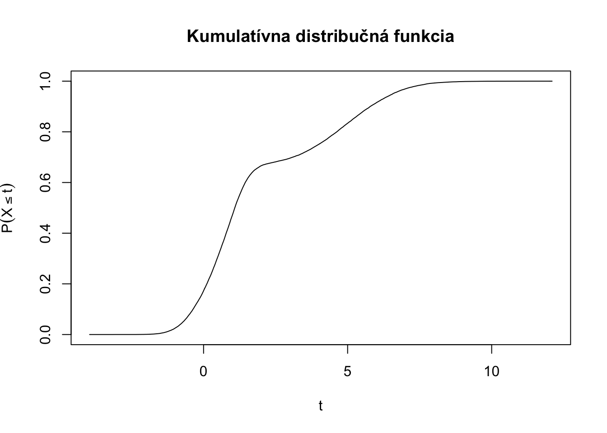
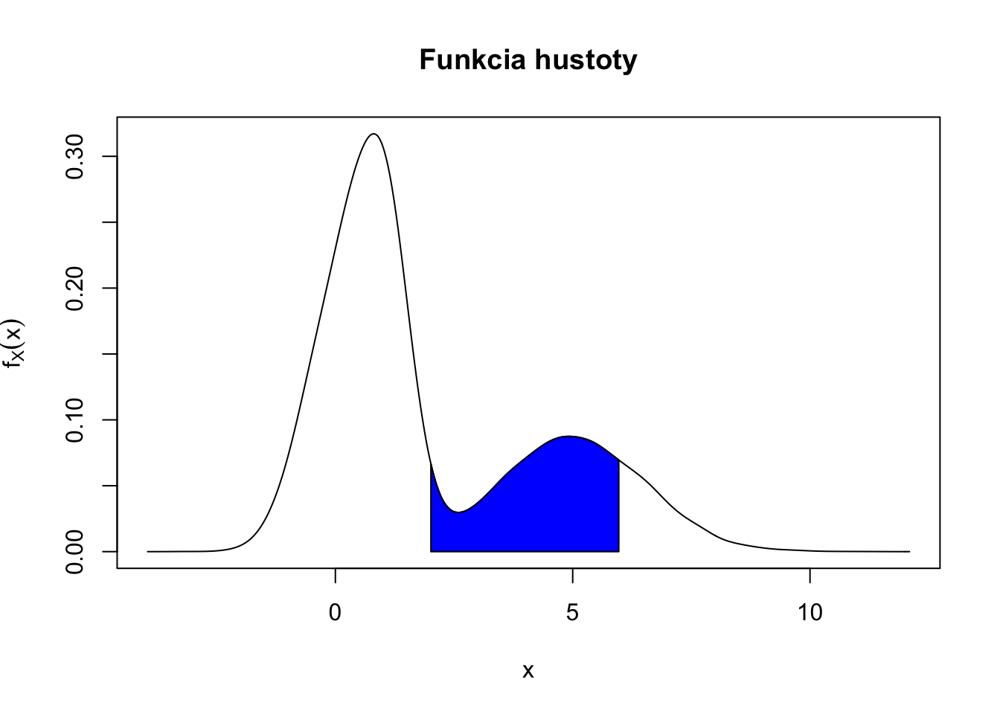
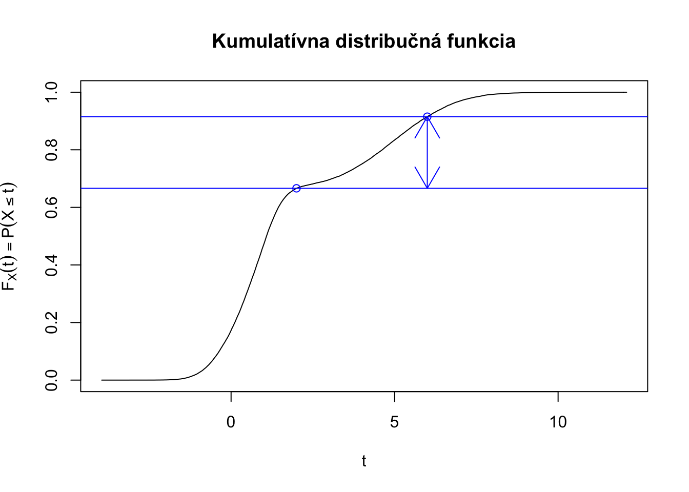
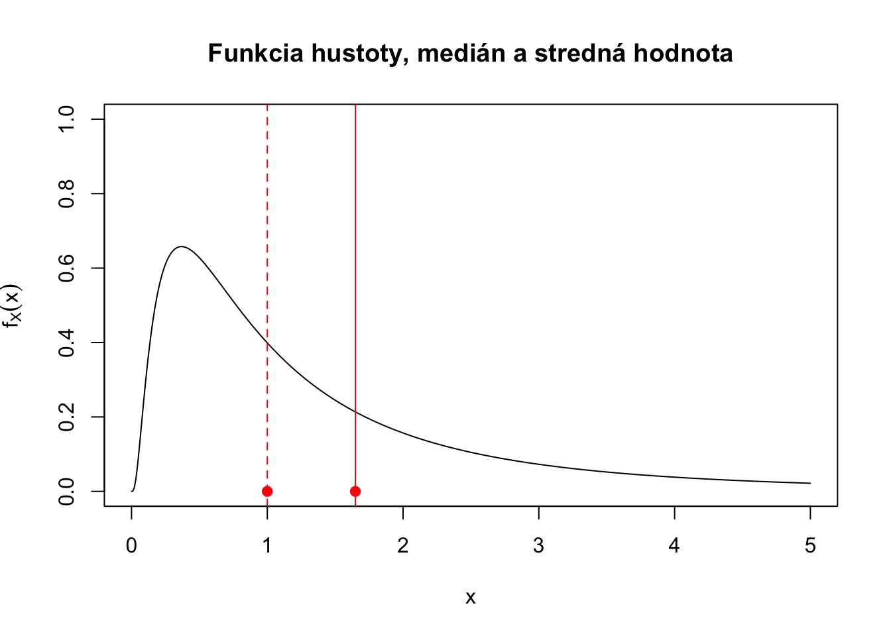
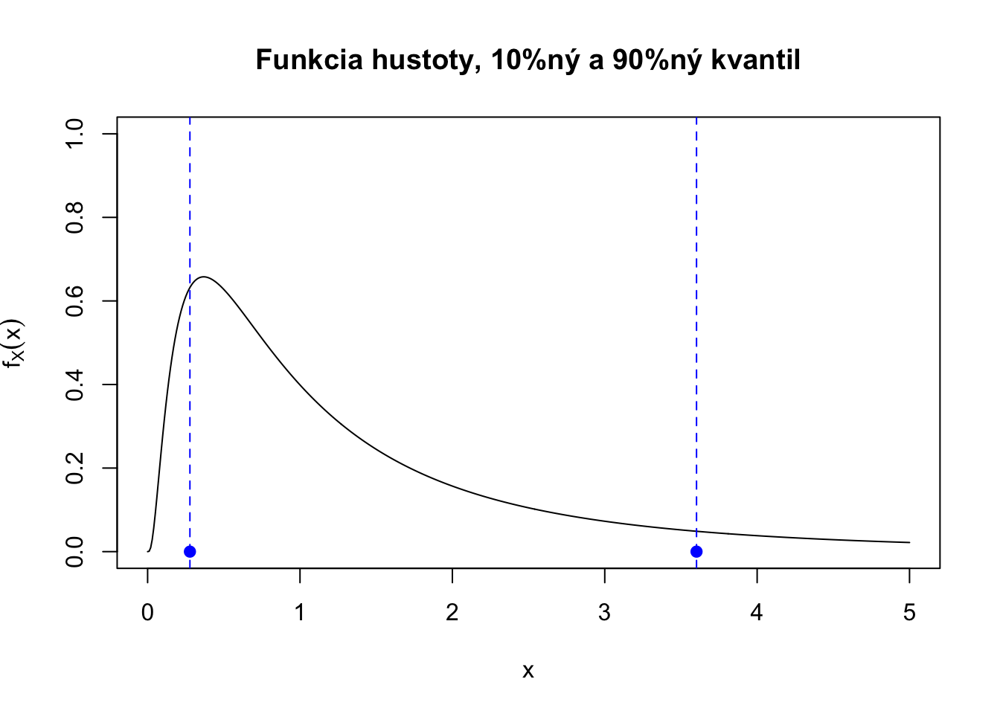
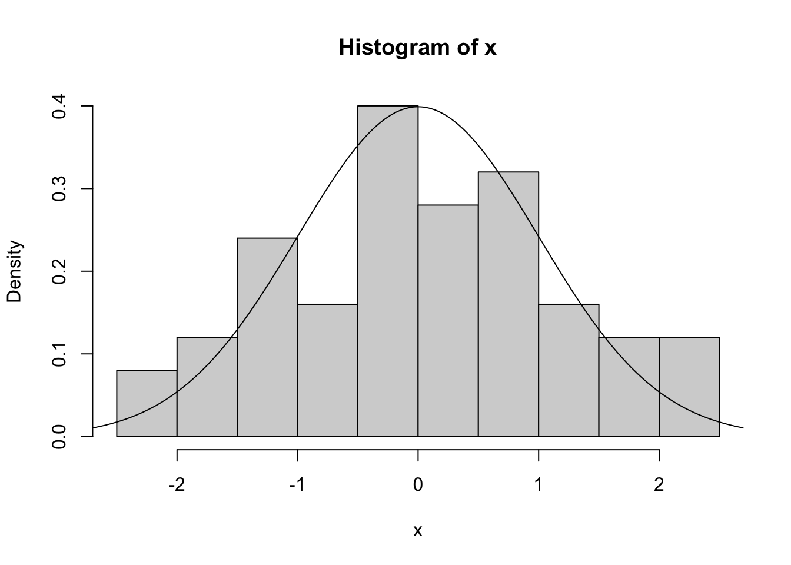

4 Zopakovanie pojmov
Náhodná premenná je nástroj na kvantifikovanie náhodnosti. Aká je pravdepodobnosť, že nastane \(X=1\)?
Nuž, nevieme, lebo \(X\) je náhodná. Je to síce pravdivá ale neuspokojivá odpoveď. Chceli by sme vedieť s akou pravdepodobnosťou nastane alebo nenastane. Už zloženie toho slova naznačuje, že má ambíciu merať to ako veľmi je táto udalosť “podobná pravde”. Existuje základné rozdelenie náhodných premenných podľa toho, či je množina hodnôt, ktoré môžu nadobúdať diskrétna alebo spojitá.
Náhodnú (diskrétnu aj spojitú) premennú môžeme charakterizovať kumulatívnou distribučnou funkciou. Distribučná funkcia náhodnej premennej \(X\) je funkcia \(F: \mathbb{R} \rightarrow \mathbb{R},\) ktorá je definovaná nasledovne:
\[F_X(x) = P(X \leq x).\]
4.1 Diskrétne náhodné premenné
Náhodná premenná je diskrétna ak nadobúda nanajvýš spočitateľne veľa hodnôt.
4.1.1 Pravdepodobnostná funkcia
Funkciu \(p_X: \mathcal{S}_X \rightarrow [0,1]\) definovanú nasledovne
\[p_X(x) = P(X=x)\] nazývame pravdepodobnostná funkcia diskrétnej náhodnej premennej \(X\).
4.1.2 Stredná hodnota
Stredná hodnota diskrétnej náhodnej premennej je zadefinovaná ako
\[\text{E}[X] = \sum_{x \in \mathcal{S}_X} x \cdot p_X(x),\] pokiaľ platí \(\sum_{x \in \mathcal{S}_X} |x| \cdot p_X(x) < \infty.\)
Tento online nástroj názorne ilustruje strednú hodnotu.
4.1.3 Variancia
Variancia diskrétnej náhodnej premennej je zadefinovaná ako
\[\text{Var}[X] = E\left[(X-\text{E}[X])^2\right].\]
Smerodajná odchýlka náhodnej premennej je odmocnina z jej variancie
\[\text{sd}[X] = \sqrt{\text{Var}[X]}.\]
Príklad 4.1 Stredná hodnota, variancia a smerodajná odchýlka výsledku hodu neférovej mince.
\[\begin{eqnarray*} \text{E}[X] &=& 0 \cdot 0.2 + 1 \cdot 0.8 = 0.8,\\ E[X^2] &=& 0^2 \cdot 0.2 + 1^2 \cdot 0.8 = 0.8,\\ \text{Var}[X] &=& E[X^2] - (\text{E}[X])^2 = 0.8 - 0.8^2 = 0.16, \\ \text{sd}[X] &=& \sqrt{\text{Var}[X]} = \sqrt{0.16} = 0.4. \end{eqnarray*}\]
Pre ilustráciu variancie môžete kliknúť sem
Príklad 4.2 Hádžeme dvoma férovými kockami a máme náhodnu premennú súčet dvoch kociek \(X\).
x <- 0:12+1
plot(x, cumsum(c(0,(1/36)*c(1,2,3,4,5,6,5,4,3,2,1),0)), type="s",
xlab = expression(x),
ylab = expression(P(X <= x)),
main = "Kumulatívna distribučná funkcia: hod dvomi kockou")
points(2:12,cumsum((1/36)*c(1,2,3,4,5,6,5,4,3,2,1)),pch=19)
points(2:12,cumsum(c(0,(1/36)*c(1,2,3,4,5,6,5,4,3,2))))
Existujú rôzne diskrétne náhodné premenné, niektoré sú natoľko zaujímavé, že ich rozdeleniam dávame špeciálne mená (rovnomerné rozdelenie, Bernoulliho rozdelenie, binomické rozdelenie, Poissonovo rozdelenie, geometrické rozdelenie, hypergeometrické rozdelenie, negatívne binomické rozdelenie a mnoho iných)
4.2 Spojité náhodné premenné
Spojitá náhodná premenná nadobúda hodnoty na množine, ktorá je spojitá, teda môže nadobúdať nespočitateľne veľa hodnôt.
4.2.1 Funkcia hustoty
Na popis náhodnosti môžeme stále používať kumulatívnu distribučnú funkciu ale namiesto pravdepodobnostnej funkcie budeme používať funkciu hustoty (alternatívne funkciu hustoty spojite rozdelenej náhodnej premennej.)
Hovoríme, že spojite rozdelená náhodná premenná \(X\) má funkciu hustoty \(f_X(x),\) kde \(f_X: \mathbb{R} \rightarrow \mathbb{R},\) ak platí:
\[P(a \leq X \leq b) = P(X \in [a,b]) = \int_{a}^b f_X(x) dx\]
par(mfrow=c(1,1))
set.seed(30)
x1 <- rnorm(10000,0,0.7)
x2 <- rnorm(10000,5,1.5)
x3 <- rnorm(10000,1,0.5)
dens <- density(c(x1,x2,x3))
plot(dens$x, dens$y, type="l",
xlab = expression(x),
ylab = expression(f[X](x)),
main = "Funkcia hustoty")
ff <- function(x) sum(c(x1,x2,x3)<x)/30000
yy <- sapply(dens$x,ff)
plot(dens$x,yy,type="l",
xlab = expression(t),
ylab = expression(P(X <= t)),
main = "Kumulatívna distribučná funkcia")
Tento obrázok ilustruje \(P(X \in [2,6]) = P(2\leq X \leq 6) = \int_{2}^6 f_X(x) dx = F_X(6) - F_X(2)\):
plot(dens$x, dens$y, type="l",
xlab = expression(x),
ylab = expression(f[X](x)),
main = "Funkcia hustoty")
value1 <- 2
value2 <- 6
# Lower and higher indices on the X-axis
l <- min(which(dens$x >= value1))
h <- max(which(dens$x < value2))
polygon(c(dens$x[c(l, l:h, h)]),
c(0, dens$y[l:h], 0),
col = "blue")
ff <- function(x) sum(c(x1,x2,x3)<x)/30000
yy <- sapply(dens$x,ff)
plot(dens$x,yy,type="l",
xlab = expression(t),
ylab = expression(F[X](t) == P(X <= t)),
main = "Kumulatívna distribučná funkcia")
points(value1,ff(value1),col="blue")
points(value2,ff(value2),col="blue")
arrows(x0=value2,y0=ff(value2),x1=value2,y1=ff(value1),col="blue",code=3)
abline(a=ff(value1),b=0,col="blue")
abline(a=ff(value2),b=0,col="blue")
Príklad 4.3 Uvažujme náhodnú premennú \(X\), ktorá modeluje IQ náhodne vybraného človeka z danej populácie. Táto náhodná premenná má nasledovnú funkciu hustoty \(f_X(x) = \frac{1}{15\sqrt{2 \pi}} e^{-\frac{1}{2}\frac{(x-100)^2}{15^2}}\). Vypočítajte pravdepodobnosť, že náhodne vybraný človek z tejto populácie bude mať IQ väčšie ako 130.
\[\begin{eqnarray*} P(X > 130) &=& 1-P(X \leq 130) = 1 - \int_{-\infty}^{130} f_X(x)dx \\ &=& 1 - \int_{-\infty}^{130} \frac{1}{15\sqrt{2 \pi}} e^{-\frac{1}{2}\frac{(x-100)^2}{15^2}} dx \\ &=& \cdots \approx 1 - 0.9772 = 2.28\%. \end{eqnarray*}\]
Tento integrál nemá analytické (“pekné”) riešenie a treba ho zrátať numericky pomocou počítačového programu.
Nasledujúci obrázok túto situáciu ilustruje
x <- seq(50,150,by=1)
y <- dnorm(x,100,15)
plot(x, y, type="l",
xlab = expression(x),
ylab = expression(f[X](x)),
main = "Funkcia hustoty IQ")
value1 <- 130
value2 <- 1000
# Lower and higher indices on the X-axis
l <- min(which(x >= value1))
h <- max(which(x < value2))
polygon(c(x[c(l, l:h, h)]),
c(0, y[l:h], 0),
col = "red")
4.2.2 Stredná hodnota
Stredná hodnota spojite rozdelenej náhodnej premennej je
\[\text{E}[X] = \int_{-\infty}^{\infty} x f_X(x) dx,\] ak \(\int_{-\infty}^{\infty} |x| f_X(x) dx < \infty.\) Teda ide o hodnoty \(x\) váhované hustotou pravdepodobnosti \(f_X(x).\)
4.2.3 Variancia
Variancia hodnota spojite rozdelenej náhodnej premennej je
\[\text{Var}[X] = \text{E}[(X-\text{E}[X])^2] = \int_{-\infty}^{\infty} (x - \text{E}(X))^2 f_X(x) dx,\] ak \(\int_{-\infty}^{\infty} |x^2| f_X(x) dx < \infty.\) Aj pre spojite rozdelenú náhodnú premennú platí \(\text{Var}[X] = \text{E}[X^2] - (\text{E}[X])^2.\)
Smerodajná odchýlka náhodnej premennej je (podobne ako pri diskrétnej náhodnej premennej) odmocnina z jej variancie
\[\text{sd}[X] = \sqrt{\text{Var}[X]}.\]
Príklad 4.4 Majme náhodnú premennú \(X\), ktorá má nasledovnú funkciu hustoty \(f_X(x) = \frac{1}{2}e^{-x/2}\) pre \(x > 0\) inak \(f_X(x)=0\). Vypočítajte \(\text{Var}[X].\)
\[\begin{eqnarray*} \text{E}[X] &=&\int_{-\infty}^{\infty} x f_X(x) dx = \int_{0}^{\infty} x \frac{1}{2}e^{-x/2} dx \\ &=& \left[x . \left(-e^{-\frac{x}{2}} \right)\right]^{\infty}_0 - \int_{0}^{\infty} 1 . \left(-e^{-\frac{x}{2}} \right) dx\\ &=& 0 - 0 - \left[2 e^{-\frac{x}{2}} \right]^{\infty}_{0} = 0 - \left(-2\right) = 2 \\ \text{E}[X^2] &=& \dots [\text{dva krát per partes}] \dots = 8 \\ \text{Var}[X] &=& \text{E}[X^2] - \left(\text{E}[X]\right)^2 = 8 - 2^2 = 4 \end{eqnarray*}\]
4.2.4 Kvantil
Medián spojite rozdelenej náhodnej premennej \(X\), je taká hodnota \(M\), pre ktorú platí
\[P(X \leq M)= P(X \geq M) = 0.5.\]
Medián je taká hodnota, že napravo aj naľavo od nej je 50% pravdepodobnostnej masy.
Nižšie sú dáta vygenerované z tzv. lognormálneho rozdelenia (náhodná premenná \(X\) má lognormálne rozdelenie ak \(\log(X)\) má normálne rozdelenie). Takéto rozdelenie je typické pre mzdy.
x <- seq(0,5,by=0.01)
y <- dlnorm(x, meanlog = 0, sdlog = 1, log = FALSE)
plot(x, y, type="l",
xlab = expression(x),
ylab = expression(f[X](x)),
ylim=c(0,1),
main = "Funkcia hustoty, medián a stredná hodnota")
mm <- exp(0.5)
med <- qlnorm(0.5, meanlog = 0, sdlog = 1, lower.tail = TRUE, log.p = FALSE)
points(med,0,pch=19,col="red")
abline(v=med, col="red", lty=2)
points(mm,0,pch=19,col="red")
abline(v=mm, col="red")
Medián je “hodnota v strede”. Na charakterizovanie pravdepodobnostnej distribúcie je častokrát zaujímavé pozrieť sa aj na kraje. Aspoň koľko zarába 5% najlepšie zarábajúcich? Aká je maximálna mzda 10% najhoršie zarábajúcich? Na toto odpovedá kvantil pravdepodobnostného rozdelenia.
\(p\)-percentný kvantil pravdepodobnostného rozdelenia náhodnej premennej \(X\) je taká hodnota \(Q_X(p)\) pre ktorú platí
\[P(X \leq Q_X(p)) = p.\]
plot(x, y, type="l",
xlab = expression(x),
ylab = expression(f[X](x)),
ylim=c(0,1),
main = "Funkcia hustoty, 10%ný a 90%ný kvantil")
mm <- exp(0.5)
q10 <- qlnorm(0.1, meanlog = 0, sdlog = 1, lower.tail = TRUE, log.p = FALSE)
q90 <- qlnorm(0.9, meanlog = 0, sdlog = 1, lower.tail = TRUE, log.p = FALSE)
points(q10,0,pch=19,col="blue")
abline(v=q10, col="blue", lty=2)
points(q90,0,pch=19,col="blue")
abline(v=q90, col="blue", lty=2)
Podobne ako pri diskrétnych náhodných premenných aj pri spojitých existujú rôzne. A niektoré sú natoľko zaujímavé, že ich rozdeleniam dávame špeciálne mená (rovnomerné rozdelenie, normálne rozdelenie, exponenciálne rozdelenie, chí-kvadrát rozdelenie, Studentovo rozdelenie a mnoho iných).
4.3 Demonštrácia v R
Vygenerujeme si pseudonáhodné čísla a zobrazíme spolu s histogramom.
library(ISwR)
#set random seed
set.seed(3214)
#generate sample of size 50 from N(0,1)
x <- rnorm(50)
#look at the histogram
hist(x,freq=F)
lines(seq(-3,3,0.01),dnorm(seq(-3,3,0.01)))
Vieme, že naša náhodná premenná má strednú hodnotu \(0.\) Ak by sme to nevedeli, mohli by sme ju odhadnúť pomocou aritmetického priemeru z našej iid vzorky na základe ZVČ
\[\bar{X} = \frac{\sum_{i=1}^n X_i}{n}.\]
## [1] 0.05538502## [1] 0.05538502Podobne o variancii vieme, že je rovná 1. Mohli by sme ju odhadnúť na základe výberovej variancie
\[S^2 = \frac{\sum_{i=1}^n (X_i-\bar{X})^2}{n-1}.\] Všimnime si, že v menovateli je \(n-1\) a nie \(n.\) Pre veľké \(n\) je rozdiel zanedbateľný ale takto skonštruované \(S^2\) má tú výhodu, že je nevychýlené, teda \(E[S^2] = Var(X).\)
## [1] 1.36166## [1] 1.36166## [1] 1.166902## [1] 1.166902Pri výberovom mediáne (alebo výberovom p-percentnom kvantile) sa jednoducho pozrieme, že kde musíme rozseknúť usporiadané dáta tak, aby na jednej strane bola polovica a na druhej druhá polovica (alebo p% dát a (1-p)% dát). V prípade párneho počtu dátovej vzorky zoberieme priemer dvoch hodnôt.
## [1] 0.03214014## [1] -0.04191173## 0% 25% 50% 75% 100%
## -2.42931246 -0.64412779 0.03214014 0.85273497 2.37762984## [1] 0.0 0.1 0.2 0.3 0.4 0.5 0.6 0.7 0.8 0.9 1.0## 0% 10% 20% 30% 40% 50%
## -2.42931246 -1.48084315 -1.09027299 -0.41158724 -0.29720847 0.03214014
## 60% 70% 80% 90% 100%
## 0.32967235 0.72728231 0.91482027 1.64491004 2.377629844.4 Cvičenia
Cvičenie 4.1 (Znova mince) Spočítajte varianciu náhodnej premennej \(X \sim Bin(10,0.25)\) (súčet úspechov 10 nezávislých hodov neférovou mincou s pravdepodobnosťou hlavy 25%) a porovnajte so simuláciou.
Cvičenie 4.2 (Zemetrasenie) Spočítajte pravdepodobnosť toho, že počet zemetrasení \(X \sim Pois(2)\) bude aspoň 3 a porovnajte so simuláciou.
Cvičenie 4.3 (Normálne rozdelenie) Spočítajte 95%ný kvantil \(X \sim N(3,4)\) náhodnej premennej a porovnajte so simuláciou.
Cvičenie 4.4 (IQ) Majme dve skupiny ľudí, ktorých IQ je charakterizované týmito rozdeleniami: \(X_1 \sim N(110,20^2)\) a \(X_2 \sim N(120,5^2).\) Prvá skupina má nižší priemer ale zasa vyššiu varianciu. Majme 10 ľudí z prvej skupiny a 5 ľudí z druhej skupiny. Odhadnite pravdepodobnosť, že človek z najvyšším IQ bude z druhej skupiny. Aká veľká by musela byť druhá skupina, aby bola táto pravdepodbnosť čo najbližšia 50%?
Cvičenie 4.5 (webshopy) Uvažujeme dva rôzne webshopy a ten istý produkt. Po istom čase pozbierali webshopy skúsenosti zákazníkov. V prvom bolo 24 z 25 ľudí spokojných, v druhom bolo 353 z 400 spokojných. Ľudia hodnotili produkt, nie webshop a produkt bol ten istý. Vieme, že šanca, že uvidíme aspoň 24 ľudí spokojných v prvom obchode je rovnaká ako to, že uvidíme aspoň 353 v druhom obchode. Aká je skutočná spokojnosť zákazníkov s týmto produktom?